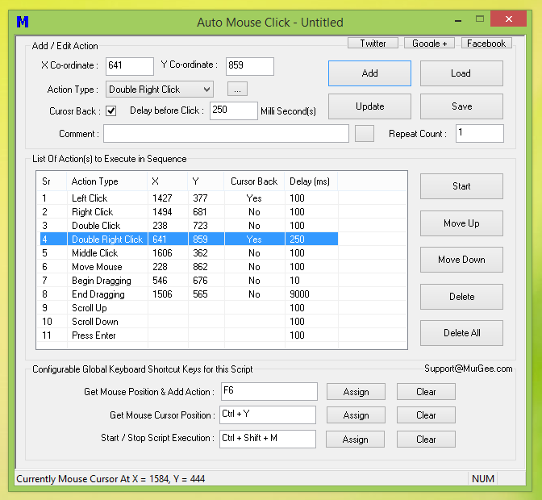
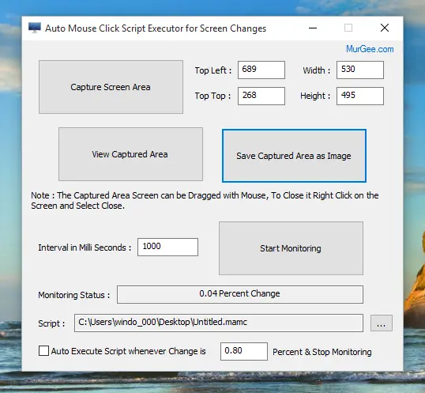
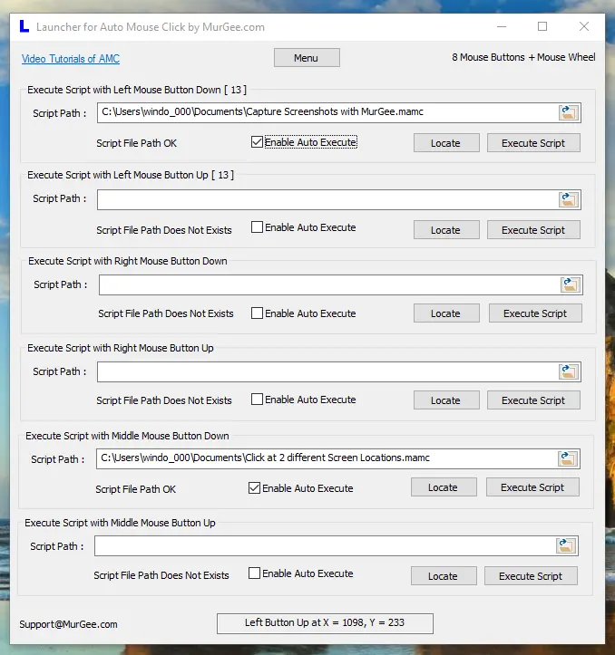

Video Tutorials for Auto Mouse Click Utility
Watch Short Video Tutorials and Quickly Learn All the Features of Auto Mouse Click Software. All the Video Tutorials are Packaged as .wmv files which can be played in Windows Media Player. You can alternatively visit / navigate to watch Latest Video Tutorials of Auto Mouse Click by MurGee.com displaying Step by Step Procedures and Advanced Features of this Windows Automation Software Utility.

Download Latest Version of this Auto Mouse Click Application Utility from Auto Mouse Click Home Page. This Version does Requires Admin Access for Auto Mouse Click Installation. Version of Auto Mouse Click Software which works in Games, Browsers, 3rd Party Applications and even with Applications running with Admin Access. This Version when run does not prompts for User Account Control (UAC) when Executing Macro Scripts. You can also visit Auto Mouse Click Download page to know all about the Software Downloading and Installation Procedure.
Download AMC Executor with Sample Batch File to Run AMC Script from Command Line or from a Batch File. You need to provide complete path to ExecuteAMC.exe as argument in order to Execute AMC Script File.
Lots of Features of this Auto Mouse Click Software are available in the Right Click Menu of the Software. To View the features not visible on the Main Screen, Do Right Click on the Software. The Right Click Menu and other Screenshots can be viewed in the Screenshots File. You can alternatively Download Screenshots of Auto Mouse Click Utility and view the List of Features offered.
You can Download any of the given below Video Tutorials by doing a Right Click on the Tutorial Link and then by Clicking on Save Target as in Internet Explorer or by Clicking on Save link as in Google Chrome.
Watch Features at Glance Video Tutorial to Quickly Learn this Windows Automation Software. You can also Watch Sample Script Video Tutorials which displays how to create and use Simple Scripts. You can also Click on any of the Given below Tutorial Link to Watch the Video Tutorial.
- How to Add Mouse Click to the Script.
- How to Add and Edit Action in a Script.
- Modify Visible Actions using Action Selector.
- Change Time Delay of Multiple Script Records.
- Press Enter Key, Press Tab Key or Automate Text Typing.
- Scroll Up or Scroll Down from within the Auto Mouse Click Script.
- Feature Tour of Auto Mouse Click Utility.
- Automate Clicking in Full Screen Games by Switching to Gaming Mode.
- Click at Current Location by Adding a Click at X = 999 and Y = -999.
- Drag and Drop by Adding Begin Dragging and End Dragging Actions.
- Type Non-English Characters by Modifying Keyboard Simulation Method.
- Add Voice to Script using Speak Comment Action.
- Launch Application Or Open Document from within Auto Mouse Click Script.
- Use Macro Recorder to Record and Playback Mouse Clicks and Keyboard Keys.
- Change Language / Text of Auto Mouse Click Controls.
- Reset Auto Mouse Click Columns with Mouse Dragging and a Click.
- Capture Screenshot from within Auto Mouse Click Script.
- Launch Website Or Open Application / Document from within Auto Mouse Click Script.
- Add Audible Alerts with the help of .wav File from within Auto Mouse Click Script.
- Schedule Script Execution to run at a Later Date / Time.
- How to use Repeat Count to execute Single Action, Multiple Times from within Auto Mouse Click Macro Script.
- Automate Special Keyboard Keys like Enter, Tab, Ctrl, Alt, Shift, etc with Special Key(s) Action of Auto Mouse Click Script.
- Use Startup Parameters to Playback the Macro Script Automatically at Startup.
- Use Windows Task Scheduler to Schedule Auto Mouse Click Script to run at a Later Date Time.
- How to invoke Non Visible Menu Commands of Auto Mouse Click for Easy Navigation and Control of Macro Script.
- Change Background Image and Text Color of Auto Mouse Click Script Window to easily Identify Macro Scripts.
- Auto Execute Script by Double Clicking on the .mamc File, View / Edit Script Actions, and Execute Auto Mouse Click Script by doing a Right Click on the .mamc File.
- When Auto Mouse Click Does Not Clicks and Only Hovers Mouse Cursor on Game / Application running as Administrator, Start Auto Mouse Click as Administrator.
- Add Random Time Delay to the Selected Auto Mouse Click Action or to All Actions in the Auto Mouse Click Script.
- Embed Macro Recording containing Mouse and Keyboard Actions to Auto Mouse Click Script.
- Use Auto Mouse Click Profile Manager to Manage Multiple Macro Scripts.
- How to Use Script Repeat Count to Execute all Script Actions Multiple Times.
- Modify Left Click Action to Click at Random Location within a pre-defined Rectangular Area.
- Send Keystroke to a Window without Loosing Focus to create a Simple Key Presser.
- Execute an Auto Mouse Click Script and Measure Time Duration required to Execute a Script with the help of Auto Mouse Click Profile Manager.
- View Script Execution Info when the Script is Executed using either Keyboard Shortcut, from Profile Manager or by Right Clicking on the Script and Selecting the Execute Command.
- Create Desktop Shortcut to Execute Script File. You can also open Shortcut Properties and Copy the Target path to Execute the Script from a Batch File or anywhere else.
- Learn how to use Wait for Window Action to Pause Script Execution untill Specified Window is Found.
- Use Close Window Action to Close an Application or Document Window.
- Automate Combination Keys like Ctrl + A, Shift + F10, Ctrl + Shift + D, or other Keyboard Keys including Ctrl, Alt or Shift with Hot Key Action.
- Filter Actions available for new Auto Mouse Click Scripts.
- Use Type Line text to Automate Text Typing with Text read from a Unicode Text File. The Ansi to Unicode Converter Might be helpful when you need Unicode Files for Type Line Action.
- Automated Optical Character Recognition to Detect Screen Changes. This can be useful in a Game or any other Scenario when you need to Detect a Specific Text on Screen and take appropriate Action.
- Embed Script in another Auto Mouse Click Script. By Executing another Script from a Script you can Automate Windows in a more Managed and Easy Way.
- Measure Time Delay in Clicking Mouse Manually or Automatically in Milli-Seconds with Mouse Click Delay Utility.
- Click at Multiple Locations Simultaneously with a Single Keyboard Shortcut. Automated Mouse Clicking, Key Pressing and much more fully configurable features.
- Watch Feature Tour of Advanced Auto Mouse Click Software to Click at Multiple locations Simultaneously with Seperate Timers. Control Multiple Actions with single Keyboard Shortcut, really Easy to Manage for Automated Mouse Clicking in Games.
- Upgrade to Resizable Auto Mouse Click with Version 9.0 and onwards. Use Systme Menu to Start the Upgrade Process and Enjoy More Screen Area with Auto Mouse Click Actions.
- Automate Image Search to Automate Image Recognition on Screen and Click on it. This can be really useful when you have to Click on Moving Objects in a Game or any other Application.
- Fill Webform with Type Line and Press Tab Action. Reading Data from a Unicode Text File is done with Type Line Action and Tab is used to Navigate to Next Control, finally the Press Enter Action is used to Submit Webform.
- Fill Complex Webform with Type Line, Press Tab Action, Send Keystroke and Press Enter Actions. Uploading Data to Complex Web Pages is Now Easy and Quick to do with this Windows Automation Software.
- Resize Columns or Reset Columns of Auto Mouse Click. This Video also displays how you can Resize Main Window of this Utility.
- Export or Import Macro Script to / from .csv File. Once the Macro Script is Exported to a .csv File, you can Edit the Macro Script in a Text Editor and then Import it to Auto Mouse Click Utility.
- Disable or Enable Macro Script Actions by controlling Repeat Count. This Video Tutorial also displayes how you can change Action's Background Color in the Script Editor.
Download Latest Version of Auto Mouse Click Software and utilize all the features. You can request a feature to be added to the software by writing to Support@MurGee.com.
Execute Script by Screen Change Detection |
Mouse Shortcut to Execute Macro Script |
|---|---|
|
 |
 |
Auto Mouse Clicker
More Sophisticated Auto Mouse Clicker is available which offers more features.